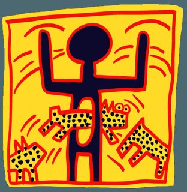

1 works · 3 files saved. Each work has one or more saved files: the image or video, and the metadata record. To repoint a token is to change the address the token itself reports, so that it names the saved copy on IPFS; each work says who could do that.

https://api.niftygateway.com/burgerman/200050001 (host api.niftygateway.com did not answer when the copy was made; the copy came from OpenSea's stored file)bafkreia4qxoyq… gateway.pinata.cloud · ipfs.io · dweb.link — OpenSea's stored file, 2026-09-21, 500×513bafkreia4qxoyq… gateway.pinata.cloud · ipfs.io · dweb.link — OpenSea's stored file, 2026-09-22, 500×513bafkreie54wbz6… gateway.pinata.cloud · ipfs.io · dweb.link — OpenSea's stored file, 2026-09-23Generated archive pages. Content identifiers point to the public IPFS network.